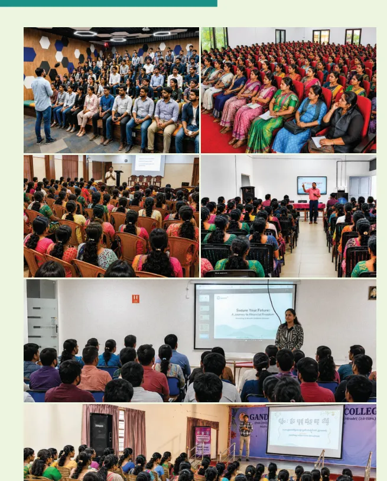

Regional business & training support
Strategic guidance, market insights, ongoing training and skills development programmes.
From market research and training to CRM, marketing, back office and risk support: discover the partnership ecosystem described in the brochure.
Become a Partner
Regional support, learning sessions and dedicated investor awareness initiatives help franchisees develop the skills to serve their clients.

Strategic guidance, market insights, ongoing training and skills development programmes.
Dedicated seminars and webinars to build awareness about markets, products and services.
Support available for investment conversations, customer engagement and local business visibility.
Research-driven investment and trading ideas for partners to support informed client interactions.
Proactive communication, issue resolution, market insights and client engagement.
Centralised branding, digital initiatives, product campaigns, website listings and maps visibility.
Product suggestions based on analysis of customer investment and trading behaviour.
Structured operational assistance supporting ongoing franchisee activity.
Research report access, market intelligence and continual training.
Geojit CRM supports customer-related interactions across lead management, servicing, follow-ups and performance analytics.

The brochure outlines support for back-office work, service resolution, compliance queries, and risk and margin information.
Support for day-to-day processes, customer query resolution and compliance or legal assistance.
Risk windows, margin information, MTM and holdings-based risk tools, plus regular HO reports.
A business-operations tool covering account opening, Client 360, pay-in/payout, pledge and reporting features.
Dedicated customer experience servicing and guidance on client disputes and relevant operational or compliance matters, as described in the brochure.
Explore a Geojit partnership backed by expertise, technology and structured business support.